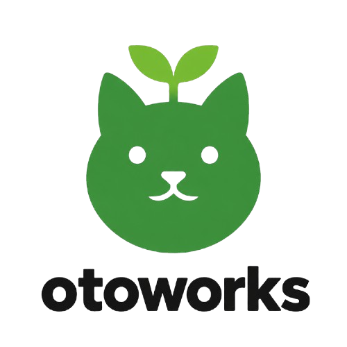

Automação
Scripts e ferramentas que tiram tarefas repetitivas do seu caminho, para você focar no que importa.
A otoworks cria programas para facilitar, automatizar e otimizar o seu dia a dia. Código aberto, sem fins lucrativos e feito por pessoas que gostam de tecnologia.
# inicie um projeto com a gente
$ otoworks --init
✓ automações prontas
✓ comunidade conectada
✓ código aberto
$ Três coisas nos movem: resolver problemas reais, compartilhar o código e aprender juntos.
Scripts e ferramentas que tiram tarefas repetitivas do seu caminho, para você focar no que importa.
Tudo publicado aberto. Leia, use, modifique e contribua — o conhecimento é de todo mundo.
Um espaço aberto no Fluxer para trocar ideias, tirar dúvidas e construir projetos juntos.
Não foi possível carregar projetos.json agora.
Abra a página de projetos.
A otoworks é uma equipe de desenvolvedores que cria programas para facilitar, automatizar ou otimizar trabalhos — sempre sem fins lucrativos.
Somos uma comunidade de desenvolvedores ou, simplesmente, de pessoas que gostam de tecnologia. Se você tem uma ideia ou quer contribuir, o Fluxer é o melhor lugar para começar.

Entre na comunidade, compartilhe um projeto ou só venha conversar sobre tecnologia.